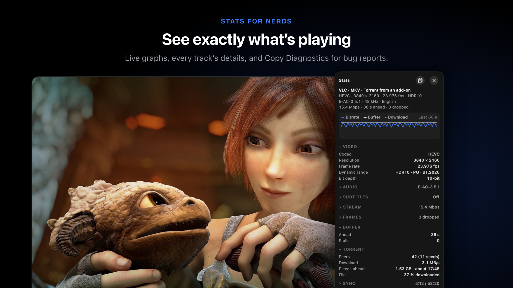

The player
Subtitles your way, any audio track, skip intro, AirPlay, and every keyboard shortcut.

Controls#
- MacClick to pause, double-click for full screen. Arrow keys skip 10 seconds.
- iPhone and iPadSwipe to seek, up and down for brightness (left) and volume (right). Hold for 2× speed. Pinch to zoom.
- Up NextAt the credits, the next episode counts down and plays on (Autoplay Next Episode).
Technical details · More controls
- Skip lengths: Settings › Playback › Skip Back / Skip Forward. Swipe Gestures can be turned off.
- Timeline: chapter marks from the file and, for torrents, how much is downloaded. Hovering or scrubbing shows preview pictures.
- Speed from 0.25× to 4×, with voices kept at their pitch. Speed carries over between episodes. Jump to Time goes to a time you type.
- The next episode is found in the background, so it starts quickly. Handoff offers what's playing to your other Apple devices.
If it won't play#
Try these in order. Most people are watching by step 2.
- Open Releases and pick another, near the top or marked Cached.
- Try another network or a VPN. Some work, school and hotel Wi-Fi blocks torrents.
- Tap Test Add-ons in Settings › Torrents & Debrid and turn off any that fail.
- On mobile data? Allow streaming in Settings › Mobile Data.
- Your own server? Test All Sources in Settings › Sources says which one can't be reached.
Keeps stopping to buffer? Pick a smaller release (1080p or 720p), or raise Start Playing After in Settings › Torrents & Debrid. A debrid service fixes most of these.
Skip intro, recap and credits#
Skip Intro and Skip Recap appear by themselves. Return skips. Make it automatic in Settings › Playback › Skipping, or always skip for one show (Always Skipping).
Technical details · Where skip times come from
The buttons show for 8 seconds, then whenever the controls are up. Times come from the file's chapters, or from Community Intro Timestamps (TheIntroDB and IntroDB) when a file has none. A wrong time can be marked from the player.
Subtitles#
- Open Audio & Subtitles in the player (V next track, C off and on).
- Pick a language. One with several tracks opens its own list.
- Nothing in your language? Tap Search Online.
- Your language, automatically: Settings › Language › Preferred Language.
- Second language: show two tracks at once, for learning.
- Lines lists every line. Click one to play from there.
- Hide Sound Cues leaves out [door slams], ♪ lyrics and “NAME:” labels.
Technical details · Subtitle sources
Search Online looks on OpenSubtitles, Subdl, Podnapisi and your Jellyfin server at once, best match for the release first. OpenSubtitles and Subdl need a free API key in Settings › Subtitles (make one at opensubtitles.com, under Profile › API consumers), where each site can also be turned off. Signing in to OpenSubtitles raises its daily limit. Subtitle files inside torrents are listed under their language, tagged Torrent. ⇧← and ⇧→ go to the previous or next line.
Subtitle style#
Subtitle Style opens beside the video, so you see each change on the real picture. Start from a preset (Standard, Cinema, Boxed, Bold Outline, Large Print), then change font, size, colour, background and outline. Save Current keeps your look.
Drag subtitles to move them. They snap to Top, Middle or Bottom, and move up to clear the controls.
Technical details · Subtitles that keep their own look
Bluebox draws subtitle files and plain text tracks inside MKV and WebM itself, so they follow your style everywhere, including picture in picture and AirPlay. Styled ASS subtitles (signs, karaoke) and picture subtitles from Blu-rays and DVDs are still drawn by VLC, in their own style, and can't be restyled or moved off the picture: pick a plain track in the same language (often labelled SRT), or one from Search Online. Atkinson Hyperlegible and Inter are included; saved presets sync with your profile. With a letterboxed picture you can drop subtitles into the black bar (Move Up for Player Controls sets the lift).
Subtitles early or late#
- Open the subtitle card and tap Timing.
- Tap Sync to the Audio. Bluebox listens and fixes it, with Undo.
- Not quite? Tap the line you just heard.
Way off? The subtitles were made for another version. Use Search Online for ones that match.
Technical details · Drift, frame rates and default delay
Sync to the Audio listens to the speech on your device and sets the delay and drift. It asks for speech recognition the first time, and keeps working if you close the card. Tap a second line a few minutes later to also fix subtitles that drift. Nudge the delay with { and } (0.1 s), or convert between frame rates (23.976, 24, 25, 29.97, 30 fps). These tools work on subtitle files; tracks inside the video always follow the video. Default Delay in Settings › Subtitles applies to every file.
Audio#
- Audio tracksIn Audio & Subtitles, or B. Your language is picked automatically (Settings › Language › Audio Language).
- Hear voices betterDialogue Boost lifts speech; Night Mode evens out loud and quiet scenes. In Tools › Sound.
- EqualiserTen bands and presets, in Tools › Sound.
Technical details · Audio delay and the equaliser
Audio delay is on the same dial as subtitle timing, for sound ahead of or behind the picture. Dialogue Boost and Night Mode are also in Settings › Playback. The equaliser has Voice, Bass Boost, Treble, Cinema, Music and Headphones presets and a Preamp; it's your profile's and syncs. HLS streams play without it.
Picture and tools#
Tools (T) opens beside the video:
- FrameAspect ratio, crop, fill, zoom up to 4×, rotate and flip.
- ColourBrightness, contrast, saturation, hue, gamma and sharpness.
- PlaybackFrame by frame, A–B repeat, a sleep timer and Save Frame.
Technical details · Tools in detail
Crop to a ratio (16:9, 1.85, 2.35, 2.39, 4:3, 21:9 and more) or by each edge; fit, fill or stretch; pan when zoomed. Starting colour values for every video are in Settings › Picture; they don't apply to HLS streams. The sleep timer stops after a time or at the end of the video. Save Frame saves to Photos on iPhone and iPad, and to Pictures › Bluebox on the Mac.
AirPlay and picture in picture#
Both work with MP4 and MOV videos (and HLS streams), with your subtitles in your style.
For MKV and other files the AirPlay button is greyed out. Tap it: Bluebox offers a version of the same film that works. Or open Releases and pick an MP4.
Technical details · The two video engines
Bluebox has two engines and picks one for each video. The system player (AVPlayer) plays MP4, M4V, MOV and HLS, and gives picture in picture, AirPlay and power-efficient decoding. VLC (libVLC) plays MKV, AVI, WebM, TS and most other files, including most torrents, with nearly any codec and embedded subtitle tracks. A video playing in VLC can't be sent over AirPlay, and Bluebox doesn't convert it on the fly.
Will my file play?#
Almost certainly: MP4, MOV, MKV, AVI, WebM, TS and most other video files play. Only AirPlay and picture in picture need MP4 or MOV (above).
Technical details · Choosing the engine
Settings › Playback › Player: Automatic (the default: the system player when it can open the file, VLC for the rest), Prefer VLC, or AVPlayer Only (MKV, AVI and WebM won't play). The release picker only picks releases this device can play, and shows each release's file type.
Open in another player#
Settings › Playback › Open Videos In sends videos to another app on this device:
- MacVLC, IINA, mpv or Infuse.
- iPhone and iPadInfuse, VLC, nPlayer or VidHub, or Other App… through the share sheet.
For just one video, right-click (or touch and hold) a release or download and choose Open In.
Technical details · How it works
Only installed players are listed. Torrent streams (and, on iPhone, downloaded files) are served to the other app by Bluebox, which keeps running in the background while it does. The other app doesn't tell Bluebox how far you got, so progress isn't recorded.
Keyboard shortcuts (Mac)#
| Key | Action |
|---|---|
| Space | Play or pause |
| ← → | Back or forward |
| F | Full screen |
| V / C / B | Next subtitle track / subtitles off and on / next audio track |
| Return | Skip intro or recap |
| T | Tools |
| ⌘W | Close the player |
Technical details · Every player shortcut
| Key | Action |
|---|---|
| Space | Play or pause |
| ← → | Back or forward (10 s by default) |
| ⇧← ⇧→ | Previous subtitle line (replays the one just said) or next line |
| 0–9 | Jump to 0–90% of the video |
| [ ] | Slower or faster (0.05×) |
| { } | Subtitles earlier or later (0.1 s) |
| − = | Subtitle size |
| V | Next subtitle track |
| C | Subtitles off, or back on to the last track |
| B | Next audio track |
| < > or , . | Step one frame back or forward |
| A / ⇧C / Z / R | Cycle aspect ratio / crop / zoom; rotate |
| L | Set A–B repeat |
| S | Save frame |
| N / P | Next or previous chapter |
| T | Show or hide Tools |
| F | Full screen |
| Return | Skip intro or recap when offered |
| Esc | Close an open card, then leave full screen |
| ⌘W | Close the player |
| ⌘/ | Open or close the Watch Party chat |
| ⌥1–⌥6 | Watch Party reactions |
Technical details · Shortcuts around the app
| Key | Action |
|---|---|
| ⌘1–⌘6 | Home, TV Shows, Movies, New & Hot, My List, Downloads |
| ⌘F | Search |
| ⌘[ | Back |
| ⌘L | Add to or remove from My List (on a title page) |
| ⌘R | Refresh |
| ⌘O | Open files |
| ⇧⌘J | Join a Party… |
| ⌘0 | Bring back the main window |